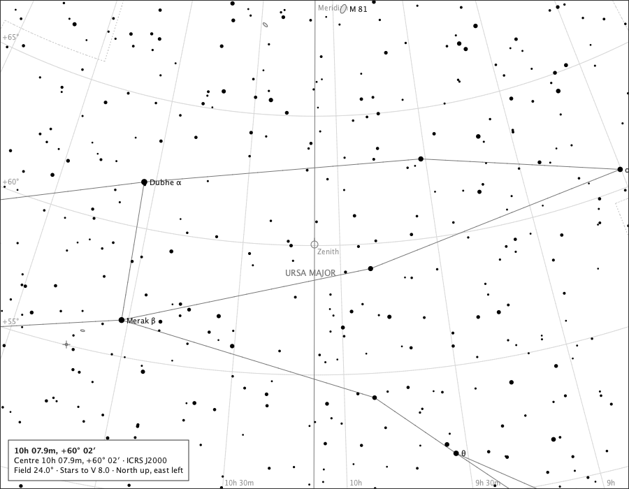

Place and Time
The point overhead

- Region
- Ursa Major
- Field
- 24°
- Ink
- The meridian line and zenith ring are Place and Time module ink; everything else is the core chart.
- Source
- docs/studies/gallery/place-and-time-zenith.png
- Produced
- Composed by the production chart component with the real meridian module and reference-ink painter (GalleryPageMain); regenerated and compared by make evidence-contracts. v1.7.0 tree (8820a6d).